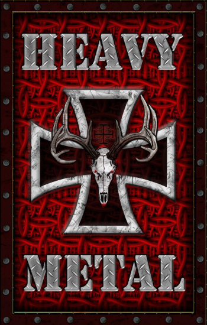
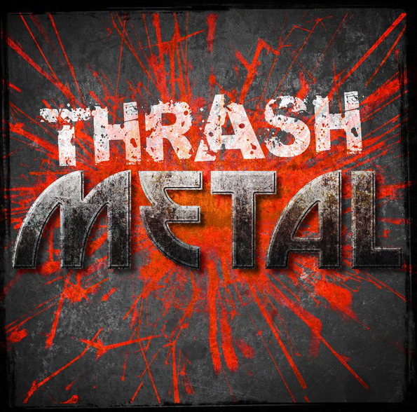
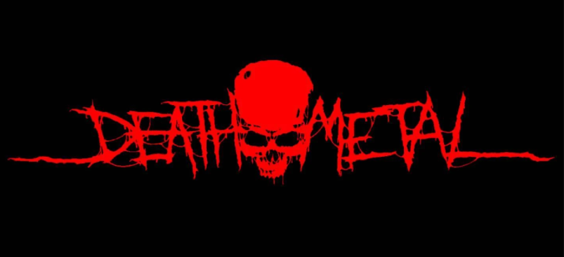

Generos
-
Heavy metal
El heavy metal es un género musical que se caracteriza por ser agresivo, potente y con un sonido distorsionado. Surgió en los años 70 y se ha convertido en un estilo muy popular en la escena musical, con bandas famosas como Iron Maiden, Black Sabbath y Judas Priest.

-
Thrash metal
thrash metal es un subgénero del heavy metal que se caracteriza por su velocidad, agresividad y energía inquebrantable. Surgió a principios de los años 80 y es conocido por sus riffs de guitarra rápidos, baterías intensas y letras frecuentemente centradas en la crítica social y política. Bandas emblemáticas del thrash metal incluyen a Sodom, Slayer, Anthrax y Megadeth

-
Death metall
El death metal es un género extremo y agresivo dentro del metal caracterizado por sus riffs pesados, vocales guturales y letras a menudo centradas en temas oscuros como la muerte, el sufrimiento y la violencia. Se distingue por la velocidad y la complejidad de sus estructuras musicales, así como por el uso frecuente de blast beats y guitarras distorsionadas

| # | Name | Album |
|---|---|---|
| 1 | Sodom | Agent orange |
| 2 | Destruction | Alive Devastation |
| 3 | Slayer | Reign in Blood |
| 2Contact |